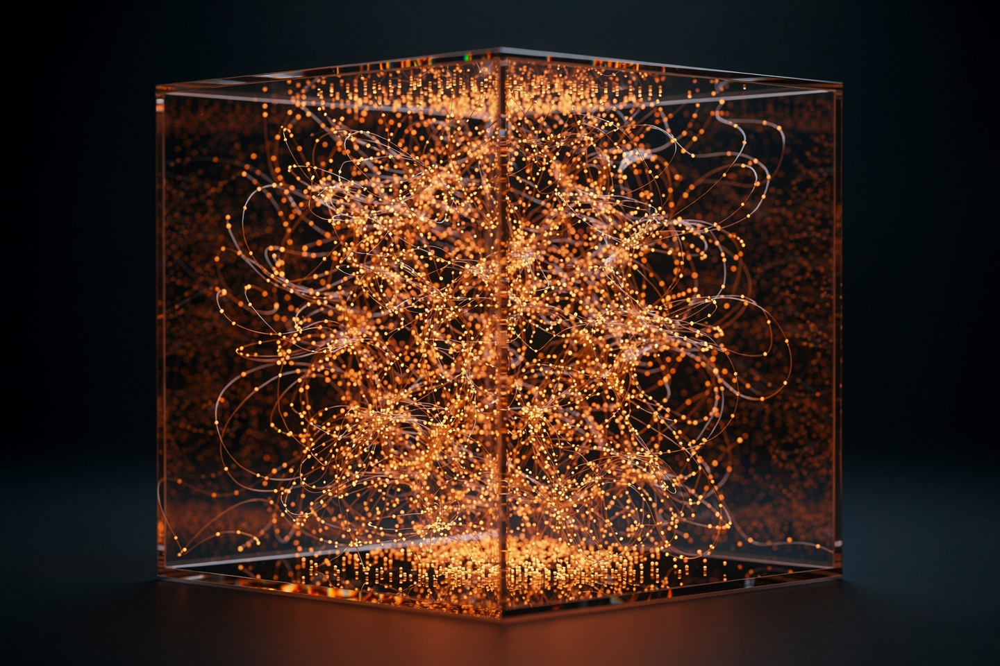
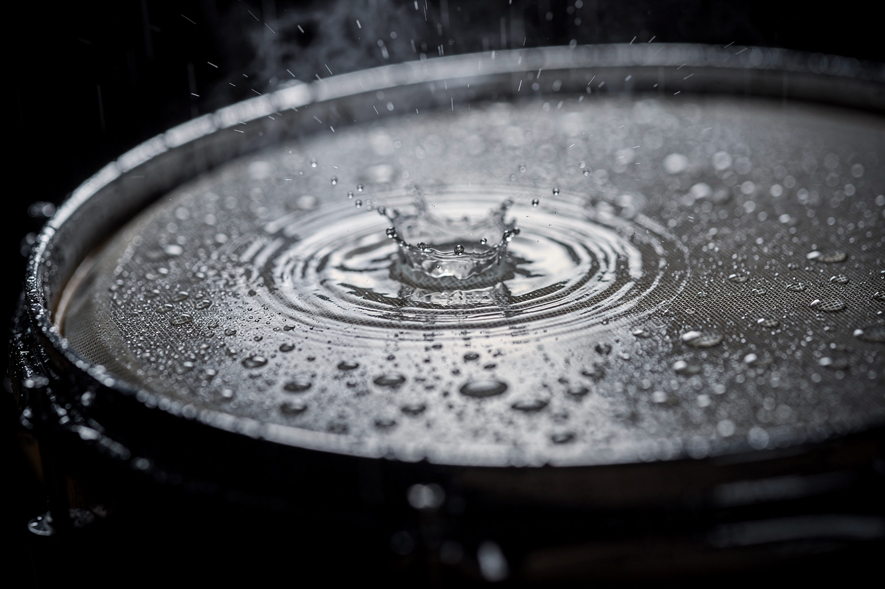

Рабочая заметка · термодинамика · часть XI
Уравнение идеального газа: молекулы как барабанная дробь по стенкам
Одна формула из четырёх букв — pV=nRT — управляет и надуванием шарика на солнце, и работой автомобильного двигателя, и прогнозом погоды.
В 1834 году Эмиль Клапейрон объединил три независимых экспериментальных закона (Бойля, Шарля, Гей-Люссака) в одно уравнение состояния идеального газа. За простой формулой pV = nRT стоит честная микроскопическая картина: давление — это статистика ударов миллиардов молекул о стенки сосуда. В этой заметке — все три частных закона, вывод из кинетической теории и сквозной численный пример на воздушном шаре.


Уравнение в двух словах
| Величина | Смысл | Единица СИ |
|---|---|---|
| p | давление | Па |
| V | объём | м³ |
| n | количество вещества | моль |
| T | абсолютная температура | К (не °C!) |
«Идеальный» газ — модель, где молекулы считаются точками без собственного объёма, не притягивающими друг друга (взаимодействуют только упругими столкновениями). Реальные газы (воздух, азот, кислород) при обычных комнатных условиях следуют этому уравнению с точностью, которой достаточно для инженерных расчётов — отклонения становятся заметны только при очень высоком давлении или очень низкой температуре (§6).
Три частных закона внутри одного
pV = nRT «содержит» три более ранних экспериментальных закона как частные случаи — каждый получается, если зафиксировать одну переменную:
| Закон | Условие | Связь |
|---|---|---|
| Бойля (1662) | T = const | pV = const |
| Шарля (1787) | p = const | V/T = const |
| Гей-Люссака (1802) | V = const | p/T = const |
Три учёных, работавших в разное время и независимо, на самом деле измеряли одну и ту же формулу с разных сторон — как три слепых мудреца, ощупывающих слона за разные части. Клапейрон в 1834 году первым увидел целое.
Микроскопическая картина
Нажмите на режимы выше: молекулы летают быстрее при нагреве (больше ударов о стенку в секунду И каждый удар сильнее — оба эффекта поднимают давление) или чаще сталкиваются со стенками в меньшем объёме при сжатии. Из кинетической теории газов можно строго вывести:
где nV — число молекул в единице объёма, ⟨Ek⟩ — средняя кинетическая энергия одной молекулы. Давление — это не какая-то отдельная субстанция, а прямое статистическое следствие того, что триллионы молекул ежесекундно бомбардируют стенки сосуда.
Объединённый закон
Для фиксированного количества газа (n не меняется) из pV = nRT следует удобная практическая форма — сравнение двух состояний одного и того же газа без необходимости знать R или n вообще:
Численный пример (закон Бойля, T = const): газ при давлении p₁ = 100 кПа занимает объём V₁ = 2 л. Его сжимают до V₂ = 0.5 л при той же температуре. Найдите новое давление.
Сжали в 4 раза по объёму — давление выросло ровно в 4 раза. Простая обратная пропорциональность закона Бойля.
Сквозной пример: воздушный шар
Воздушный шар на земле (p₁ = 100 кПа, V₁ = 3 л, T₁ = 300 К) занесли в тёплую комнату у батареи, где он одновременно чуть сжался соседями в толпе до V₂ = 2 л и нагрелся до T₂ = 330 К. Найдите новое давление внутри шарика.
Все три эффекта — исходное давление, сжатие и нагрев — учтены одной формулой сразу, без необходимости считать n или R. Именно так на практике инженеры и метеорологи работают с газом: не через абсолютные величины, а через отношение двух состояний.
Куда это ведёт: когда газ не идеален
Модель идеального газа — приближение, работающее тем хуже, чем плотнее газ и чем ближе он к точке конденсации в жидкость. Два допущения, которые нарушаются в реальных условиях: молекулы ИМЕЮТ собственный объём (не точки), и между ними ЕСТЬ слабое притяжение (силы Ван-дер-Ваальса) — при высоком давлении молекулы упаковываются плотнее, а притяжение начинает заметно стягивать газ, уменьшая эффективное давление на стенки по сравнению с идеальной моделью.
Йоханнес Ван-дер-Ваальс в 1873 году поправил уравнение состояния двумя добавочными членами, учитывающими собственный объём молекул и их взаимное притяжение: (p + a/V²)(V − b) = nRT. При достаточно низкой температуре это уравнение предсказывает не только газовую, но и жидкую фазу того же вещества — модель, из которой родилось современное понимание фазовых переходов и критической точки (за что Ван-дер-Ваальс получил Нобелевскую премию 1910 года).
На сайте это отдельный закон, если хочется пройти глубже:
Эксперимент дома
Надуйте воздушный шарик до среднего размера при комнатной температуре, отметьте маркером примерный диаметр, затем положите его в холодильник на 15-20 минут (не в морозилку — там резина задубеет).
Что заметить шарик заметно уменьшится в размере (при том же количестве воздуха внутри и почти том же давлении атмосферы снаружи) — прямая демонстрация закона Шарля/Гей-Люссака: понижение T при почти постоянном p требует уменьшения V. Достаньте обратно в тепло — шарик снова раздуется до исходного размера.
Возьмите медицинский шприц без иглы, наберите немного воздуха, плотно закройте отверстие пальцем (чтобы воздух не мог выйти) и попробуйте вдавить поршень.
Что заметить чем сильнее вы сжимаете (уменьшаете V), тем сильнее шприц сопротивляется пальцу — растущее давление в точности следует закону Бойля pV = const (§4): вдвое меньший объём — вдвое больше давление, вы физически чувствуете это своей рукой.
Задачи для проверки
Сначала подумайте сами, затем откройте решение. Решение везде идёт по схеме: Дано → Закон → Решение → Ответ.
1. Газ при давлении 200 кПа и объёме 4 л (постоянная T) расширяется до 8 л. Найдите новое давление.
Дано p₁ = 200 кПа, V₁ = 4 л, V₂ = 8 л, T = const.
Закон закон Бойля (§2): p₁V₁ = p₂V₂.
Решение p₂ = p₁V₁/V₂ = 200·4/8 = 100 кПа.
Ответ 100 кПа — объём вдвое больше, давление вдвое меньше.
2. Газ при постоянном давлении занимает 2 л при температуре 300 К. До какого объёма он расширится при нагреве до 450 К?
Дано V₁ = 2 л, T₁ = 300 К, T₂ = 450 К, p = const.
Закон закон Шарля (§2): V₁/T₁ = V₂/T₂.
Решение V₂ = V₁·T₂/T₁ = 2·450/300 = 3 л.
Ответ 3 л.
3. Закрытый баллон с газом при 300 К имеет давление 150 кПа. До какой температуры его нужно нагреть, чтобы давление выросло до 200 кПа (объём баллона не меняется)?
Дано p₁ = 150 кПа, T₁ = 300 К, p₂ = 200 кПа, V = const.
Закон закон Гей-Люссака (§2): p₁/T₁ = p₂/T₂.
Решение T₂ = T₁·p₂/p₁ = 300·200/150 = 400 К.
Ответ 400 К (127 °C).
4. Почему давление газа, по кинетической теории (§3), растёт при нагревании даже если объём и число молекул не меняются?
Закон формула (1), §3: p = (2/3)nV⟨Ek⟩.
Решение температура — это, по сути, мера средней кинетической энергии молекул ⟨Ek⟩. При нагреве (nV не меняется, объём и число молекул те же) молекулы в среднем движутся быстрее — каждый удар о стенку сильнее И удары происходят чаще (частица успевает долететь до стенки и обратно быстрее) — оба эффекта повышают p.
Ответ рост средней кинетической энергии молекул — более сильные и более частые удары о стенки.
5. При каких условиях (высокое/низкое давление, высокая/низкая температура) реальный газ хуже всего описывается уравнением идеального газа? Почему?
Закон ограничения модели (§6).
Решение хуже всего — при ВЫСОКОМ давлении и НИЗКОЙ температуре: молекулы сближаются, их собственный объём перестаёт быть пренебрежимо малым по сравнению со свободным пространством, а силы притяжения (Ван-дер-Ваальса) становятся заметны — оба допущения идеальной модели (точечные, невзаимодействующие частицы) нарушаются. При этих же условиях газ обычно и приближается к точке конденсации в жидкость.
Ответ высокое давление + низкая температура — условия, близкие к конденсации.
Опечатка, неверная формула, число не сходится, коряво объяснено — напишите нам: feedback@bridge42worlds.org. Каждое сообщение реально читается, разбирается и по нему вносится правка — это не «в стол».